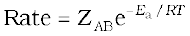
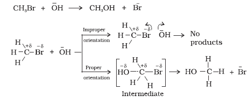
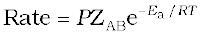

4.6 Collision Theory of Chemical Reactions
Though Arrhenius equation is applicable under a wide range of circumstances, collision theory, which was developed by Max Trautz and William Lewis in 1916 -18, provides a greater insight into the energetic and mechanistic aspects of reactions. It is based on kinetic theory of gases. According to this theory, the reactant molecules are assumed to be hard spheres and reaction is postulated to occur when molecules collide with each other. The number of collisions per second per unit volume of the reaction mixture is known as collision frequency (Z). Another factor which affects the rate of chemical reactions is activation energy (as we have already studied). For a bimolecular elementary reaction
A + B → Products
rate of reaction can be expressed as
 (4.23)
where ZAB represents the collision frequency of reactants, A and B and e-Ea /RT represents the fraction of molecules with energies equal to or greater than Ea. Comparing (4.23) with Arrhenius equation, we can say that A is related to collision frequency.
Equation (4.23) predicts the value of rate constants fairly accurately for the reactions that involve atomic species or simple molecules but for complex molecules significant deviations are observed. The reason could be that all collisions do not lead to the formation of products. The collisions in which molecules collide with sufficient kinetic energy (called threshold energy*) and proper orientation, so as to facilitate breaking of bonds between reacting species and formation of new bonds to form products are called as effective collisions.
For example, formation of methanol from bromoethane depends upon the orientation of reactant molecules as shown in Fig. 4.12. The proper orientation of reactant molecules lead to bond formation whereas improper orientation makes them simply bounce back and no products are formed.

Fig. 4.12: Diagram showing molecules having proper and improper orientation
To account for effective collisions, another factor P, called the probability or steric factor is introduced. It takes into account the fact that in a collision, molecules must be properly oriented i.e.,

Thus, in collision theory activation energy and proper orientation of the molecules together determine the criteria for an effective collision and hence the rate of a chemical reaction.
Collision theory also has certain drawbacks as it considers atoms/molecules to be hard spheres and ignores their structural aspect. You will study details about this theory and more on other theories in your higher classes.